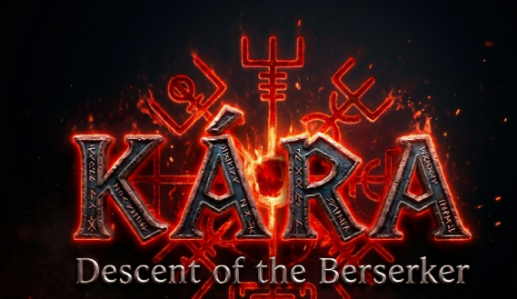
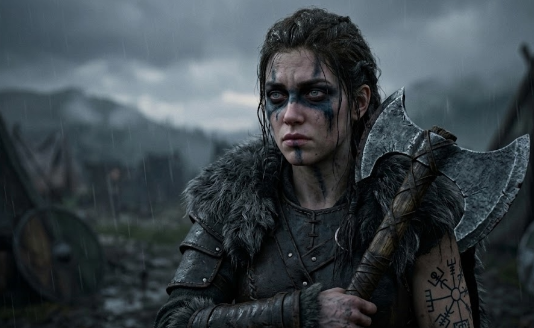
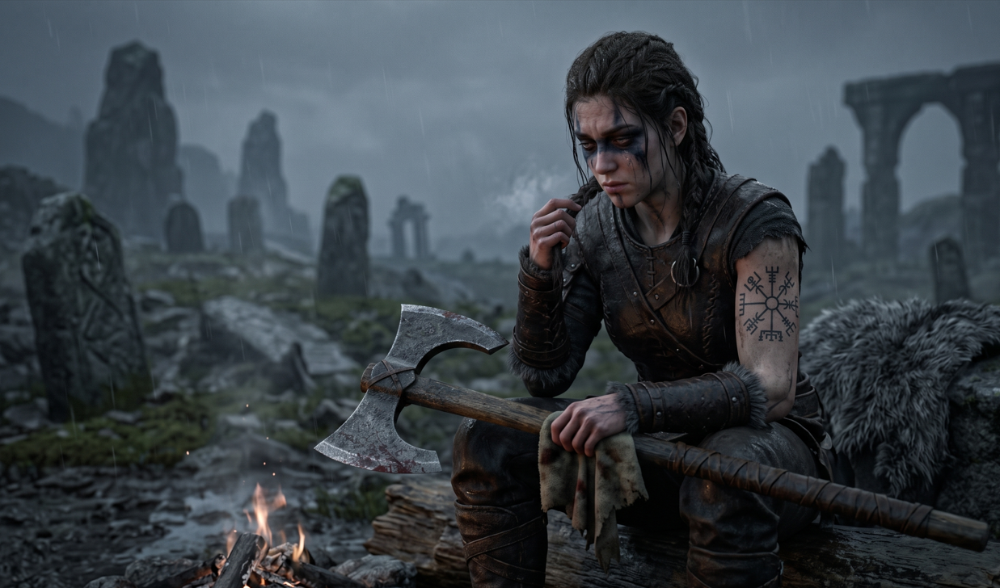

Avances reales, sin relleno de marketing. Esto es lo que se está construyendo, ahora mismo.

Acción grimdark de ambientación nórdica construida en Unreal Engine 5. Kara, una guerrera consumida por el duelo, atraviesa cinco reinos — cada uno una etapa distinta de su pérdida — en busca de recuperar a su hija.


Última actualización: pre-producción, fase intermedia.
Un segundo proyecto más pequeño: plataformas de terror psicológico donde la luz es refugio y la oscuridad caza. Ya hay una demo del prototipo para jugar.
Ver proyecto →Contenido adicional explorando el primer reino, si el alcance del proyecto principal lo permite tras el lanzamiento.